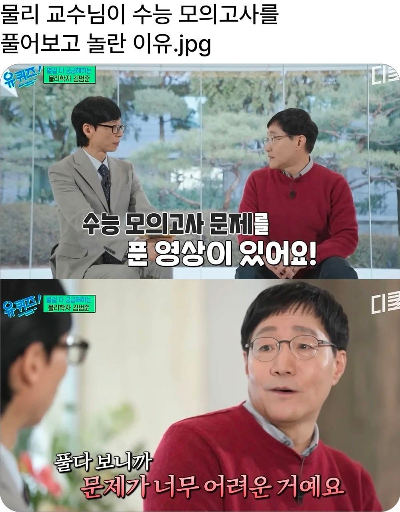
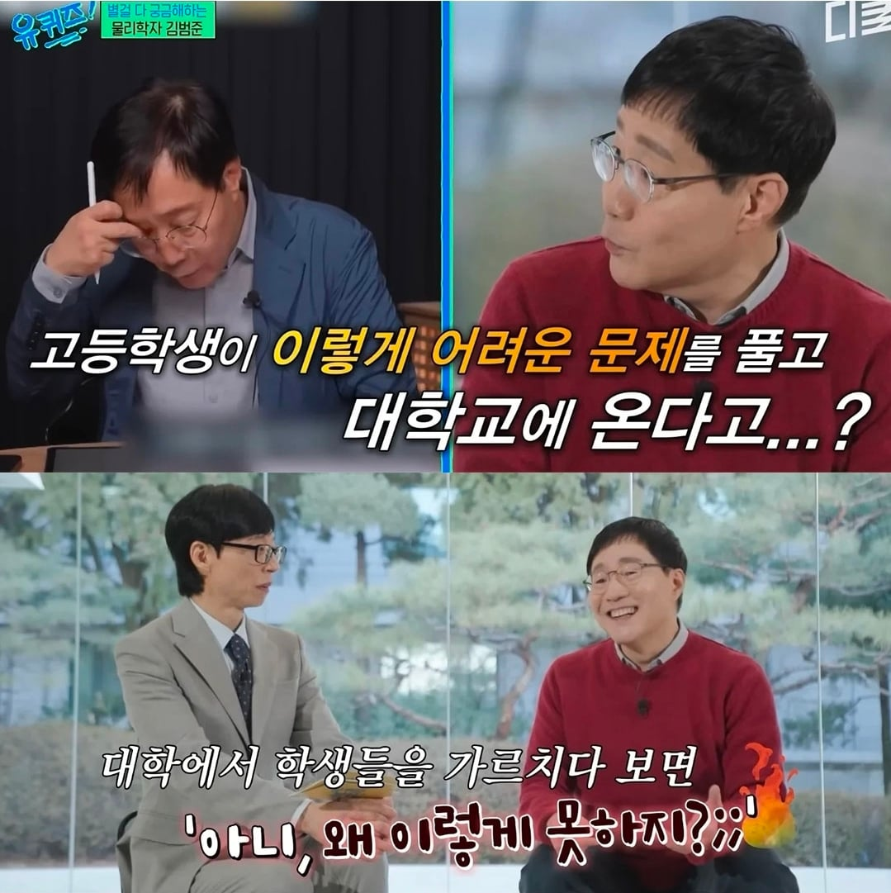
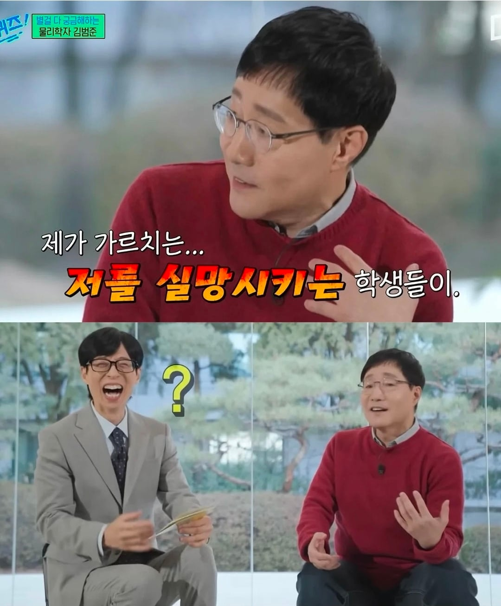
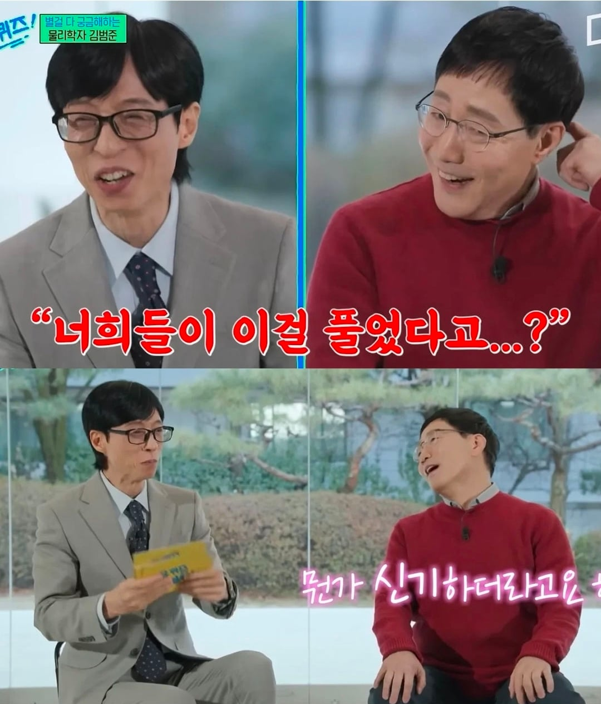
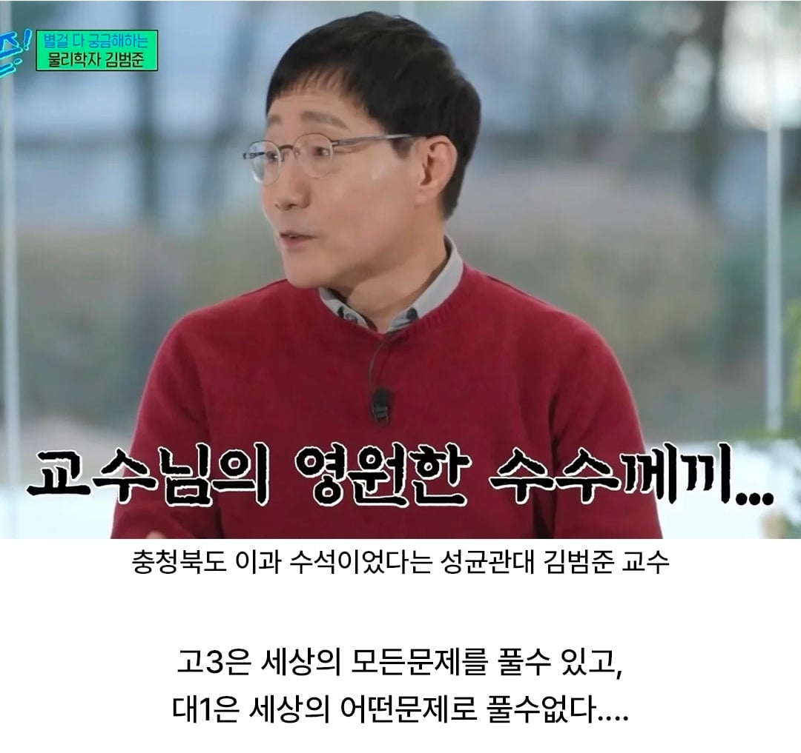

물리가 반토막이 났다 안카요
대학교 들어가기전에 초기화됨ㅋㅋ
수능문제는 저 교수님 같은 소수를 제외하면 문제 유형에 따라 접근법이나 풀이방식, 적용할 공식 같은 걸 어느 정도 외워서 푸는 거라 근본적인 원리를 모르고 쉽게 풀 수 있는 길을 따라 가는 거라, 저 교수님 눈에는 "아니 저런 것도 다 이해하고(아님) 풀 수 있는 애들이 왜 겨우 이걸 못 풀지?" 하게 되는 거 ㅋㅋㅋㅋㅋ
훨씬 쉬운 영역으로 내려와도 근의 공식 외워서 쓰는 사람 중에 근의 공식 유도는 못하는 사람이 더 많을 걸?
교과서나 선생님이 찝어준 문제지, 프린트랑 거의 똑같은 문제 숫자만 바꿔서 내는 내신보다는 낫지 않나 싶기도 하고. 요즘은 다를지 모르겠는데 라떼 수학 시험을 예로 들어서 - 수능은 100분간 30문제 푸는 건데, 내신 시험을 50분동안 20~25문제 풀라는 건 그냥 문제 외워놓고 기계적으로 풀라는 것 밖에 안되는 거 아니여?
내신문제는 훨 쉽자나...
걍 단순 계산도 많고 선생님도 그거 문제 내는데 시간 얼마 안걸렸을걸
쉽...기도 한데 고배점 문제라고 해도 변별력 문제 한 두개 정도 말고는 교과서나 선생님이 집어준 문제지 프린트에 다 있던 유형이라서, 문제에 대해 생각할 필요 없이 문제를 보자마자 기존에 풀었던 문제 접근 방법 그대로 스타트 끊으면 되는? 고민의 여지가 없는 문제가 많았으니까 ㅇㅇ 그 문제를 풀어봤고, 풀이법을 외웠냐 아니냐의 차이가 컸던 걸로 기억해서.
ㄹㅇ 유도는 못해
유도말고 태권도는 해?
한국 교육이 개똥망이라는 뜻. 원리를 이해시키려고 가르치는게 아님 한국은.
학문이 아닌 성실함을 보는 척도로서 작용하는게 아닐까
사실 암기에서 이해가 오기도 하고 이해에서 암기가 오기도 해서 꼭 암기식이 나쁜 건 아님. 오히려 더 보편적으로는 좋다고 봄.
만약 수학/과학을 암기가 아니라 이해해서 풀려고 하면 고등교육 과정까지 진도를 못나갈껄.
적어도 학문의 최외각 나오기 전까지는 이해의 중요성이 덜해지긴 함. 거인들의 발자취를 따라가는 것 조차 벅차니까.
그리고 사실 과학의 본질은 이해가 하니라 암기긴 함. 잘은 모르겠지만 이렇게 하니 이렇게 되더라 하던 것들을 모아다가 설명이 되는 이론을 하나 만드는 거지. 그게 아무리 그럴듯하더라도 현재까지 관측 기준으로만 그럴듯한 것임.
데이터를 모으고 기록해서 하나의 이론을 만드는 것이지
데이터를 다 암기해야하는 것이 아님.. 고대에 조차 그걸 다루려고 종이가 있고 펜이 있었거든
그렇게 쌓이고 정립된 도구들의 도움을 거인의 어깨라고 부르는 것이고 그게 과학이나 학문의 본질인데
거인의 발자취를 따라가는 건 문자그대로 다른 행위이고 목적이 다른 거지
데이터를 암기하는게 아니고... A를 하니 B가 되더라 하는 것을 받아들이는 것임. 과학에 why는 없으니까. how를 설명하려는 건데 그것도 사실 본질적이진 않음. 현실에 빗대어 설명할 뿐이지.
뇌리셋 ㅋㅋㅋㅋ
교수님이 말한 문제 제대로 풀던 애들은 의대갔겠지요. 제대로 못푼애들이 교수님 제자 된거에요
저 선생님 제자들도 킬러문항 몇개정도는 빼고 어지간히 풀어야 될 수 있음
막상 그 몇문제 차이가 크긴한거지만 몇문제 차에 안나
그 킬러문항을보고 이런걸푼애들이라고'? 라는생각이 드셧겠지ㅋㄱ
성물리면 2는 받았을텐데 그정도면 제대로 다 푸는 애들임
그 몇달.사이에 다 까먹음 ㅋㅋ
면허시험 어려운거 통과하는거랑 도로주행 하는게 다르긴 함 ㅋㅋ
수능 화학1 한창 공부하던 시절에도 들었던 의문이
화학의 PV=nRT 개념을 아는게 중요한게 아니라
평가원이 준비한 개지랄맞은 퍼즐문제 누가누가 빨리푸나 경연대회 같이 느껴졌음
문제에 함정 넣고 하는거 보이면 진짜 수능 자체에 회의가 들긴 하더라
화1에서는 pv=nrt 안배우지 않음?
배웠나 안배웠나는 기억 안나는데
배우면 문제 풀기 쉬워져서 수능 공부 할때는 알고 있었어야 되징
ㅇㅇ 나도 화1 풀때 이상기체 상태방정식 썼는데
화2 안하고 화1만한 사람하고 대화하는데 처음듣는다고 해서 놀란적 있음
화생은 모르겠고 물지는 진짜 퍼즐 푸는 것 같더라
뇌 저장 공간 부족으로, 불필요한 데이터는 모두 알코올로 포맷했습니다.
저 교수님은 아는 과정을 즐기시는 분이라 평생 이해하면서 문제 풀어오셨을거임. 단순히 풀이과정을 외워서 푸는건 저 분 머리속에서 푼다고 인지도 안되고 있을걸?
말도 되게 잘하시던데
문제 푸는 원리를 다 알고 푸는 게 아니니까요
영어도 결국 평가원 문제유형대로 재빨리 유추해서 푸는거지 읽어서 푸는게 아닌데 왜 영어 시험 관련해서는 실드를 많이 쳐주는지 의문임
수능도 결국 하면 오르는 시험이라 그럼 우리나라에 존재하는 모든 시험중에 가장 준비하기 좋은 시험이 수능이잖아 강사도 많고 하나하나 친절하게 알려주고 범위도 정해져있고 풀어볼 문제들도 넘쳐나고
근데 대학부터는 수능만큼 친절하게 알려주지 않음 강사가 쉽게 설명해주던걸 혼자 책 보고 끙끙대며 이해해야 하고 풀어볼 문제도 별로 없음
수능도 머리 좋은 애들은 딱 보면 여기서 어떤 공식, 성질 이용하면 되겠다 어떻게 변형하면 되겠다 이런 응용력이 좋잖아 하지만 수능은 여기선 어떻게 해라 강사가 다 알려줌
그걸 외우고 반복하다보면 머리가 그렇게 좋지 않은 애들도 수능이란 범위 안에서는 응용력이 생기고 어려운 문제도 푸는거지 하지만 대학 이후로는 친절한 강사도 없고 컨텐츠도 적으니 머리빨이 더 잘 드러나기 시작하는거고
고3 애들 수능 치루고 나면 한번 초기화 됨 ㅋㅋ
생명과학할때도 ATP 생성과정 간단하게 설명하면 개간단한데
정확한 과정 원리 한단계한단계 다 이해하려면 훨씬 복잡해지고
대학과정에서 열역학 곁들이고 이러면 훨씬 심도있어지는데
수능에선 적당선 까지 배우고 푸니까
교수님 입장에선 그럴만도
뇌가 알코올로 리셋됨 ㅋㅋ
고3은 일정 난이도부터는 기출 외워서 푸는데
저 교수님같은 진심인 천재들은 문제를 이해해야 이 문제를 풀었다고 받아들이니까
본인의 자식들이 근무중인 대학도 못간다는 사실을 알고나서 학생들에게 사과하는 교수들이 매년 나옴
수능의 결과가 좀 이상한 힘겨루기하는 모양새가 있지
요령 잘 터득하면 점수가 향상되니까
기술적으로 특정 문제들에는 뛰어나지만 전반적인 사고력에서 부족함 많이 보임
알코올이 뇌에 미치는영향
내 고등학교 선배님이시더라...... 기수는 한참 위인 분이지만....
큐브도 쌩으로 맞추라고히면 대학교수가 와도 못하지 근데 공식어느정도 외워서 하면 누구나 맞출 수 있음.
그리고 취업하는순간 다시 리셋되는 마법
고등학교를 졸업하면 모두 잊는다는 속박을 걸고 공부한거지
이게 교육이라고 할수 있나 싶음
난 문돌이고 정확하게 대2 1학기에 경영학원론 교양수업들으러가서 미적분 나오니까 ??? 상태가.
공정성있게 평가한다는게 우리사회의 장점과 단점이된거지
우리나라가 유독 공정성을 중요시하는 경향이 강해서 수능이 그런식으로 나오는거고
교육이 그런식으로 갈수밖에없긴하지
저분 유튜브 채널 과학을보다에 고정출연 하시는데 아는게 엄청 많음 간간히 나오는 같은 학교 권석준 교수랑 같이 생체 위키백과임
그래도 과탐풀던시절 vs 생윤런하는지금